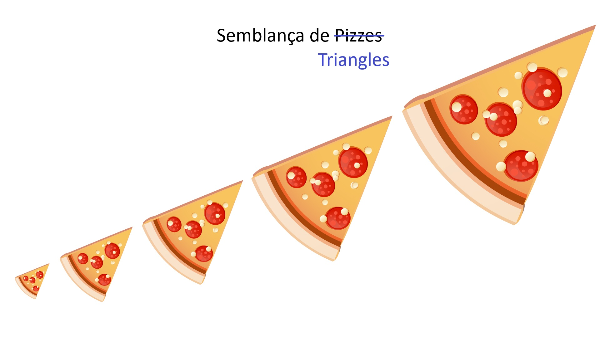

Introducció
Quan parlem de triangles i volem saber si són o no semblants, tenim un gran avantatge! Els triangles són senzills! 3 costats són pocs costats! Moltíssims menys que 4 o 5!
Diré més, si sabem treballar amb triangles, podem convertir un quadrilàter qualsevol en 2 triangles fent una diagonal. Així que també sabem pensar en quadrilàters, i de manera semblant amb pentàgons o hexàgons. Per això tenim un apartat de triangles en aquest punt.
Si mires la barra de l'esquerra, veuràs que hem separat aquest apartat en diversos punts. Estan pensats per anar d'un en un, però pots botar si et fa falta o coneixes algun apartat amb anterioritat:
| · Repàs Triangles: | |
| Aquí farem un repàs de com es classificaven els triangles i alguns conceptes importants que ja hauríeu de conèixer però potser no recordem. | |
| · Criteris de Semblança: | |
| Als triangles, no fa falta mirar tots els costats i tots els angles, hi ha camins més ràpids per veure si són o no semblants. | |
| · Triangles en Posició de Tales: | |
| Hi ha una manera com podem "encaixar" triangles que garantitza que són semblants. | |
| · Teorema de Tales: | |
| En realitat, és una adaptació de l'apartat anterior. | |
| · Problemes de Semblança de Triangles: | |
| Apartat súper dúper mega important. Problemes d'examen. | |
